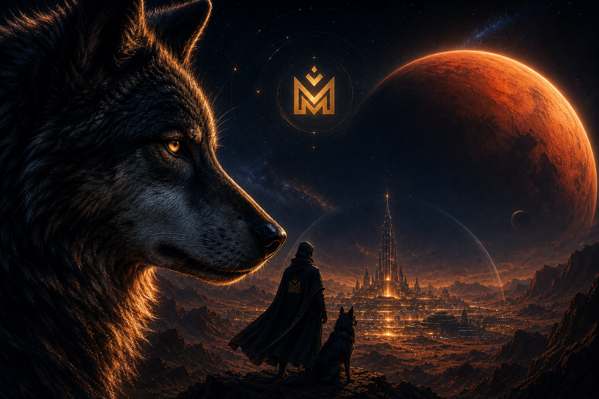
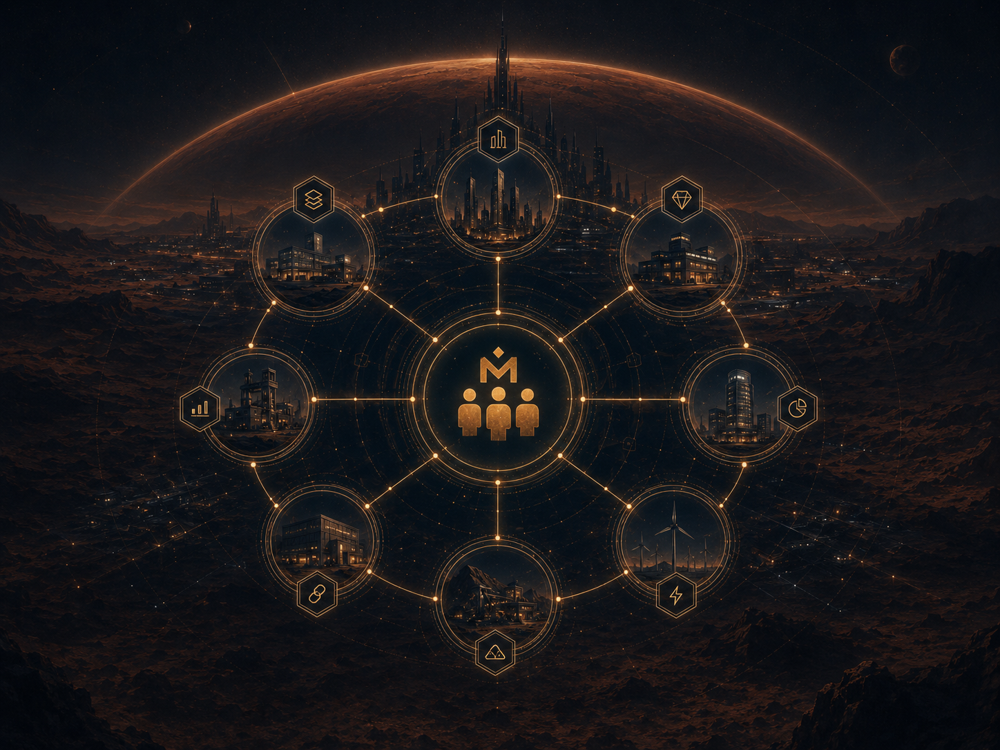

GENESIS COMMAND
THE MARTIANS
PROTOCOL
A cryptographic family enterprise, stewardship, and generational coordination protocol.
Family was the first network. We’re giving it infrastructure.
— The Martians
I go out in the morning and devour the prey. At night, I split the spoil with the family.
A Benjamite · The Wolf
GENESIS NETWORK 0001 · MARTIN × WILLIAMSACTIVE

Djuvane SalonSignal Sheryl Williams GetTwisted FamilyTHE PROTOCOL LAYERS
- Identity & MembershipPermanent Martian IDsSpecified
- Enterprise LayerOwnership and family graphSpecified
- Contribution LedgerAttested labor and stewardshipBuilding
- Agreement ProtocolPrivate docs, public-safe hashesQueued
- Governance EngineScoped authority onlyQueued
- MARS Economic LayerIssuance remains lockedDeferred
MISSION
To enable families to operate as durable multi-generational institutions by cryptographically preserving what matters.
BUILDGROWSECUREREPEAT
7GENS GOAL
100+YEARS ARCHIVE
∞LEGACY
RECENT ACTIVITYSIMULATED ALPHA FEED
BUILDING TODAY.
FOR GENERATIONS.
DEVELOPER TERMINAL
- API / ArchitectureSpecified
- SchemasSpecified
- SDKQueued
- GitHubPublic
- TestnetPending